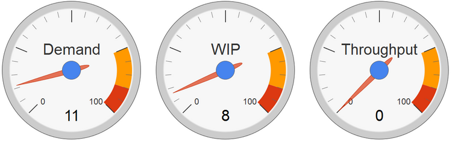
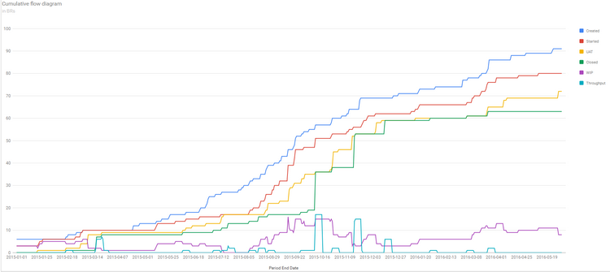
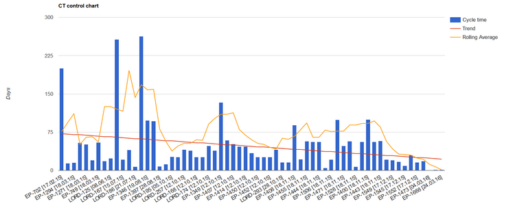
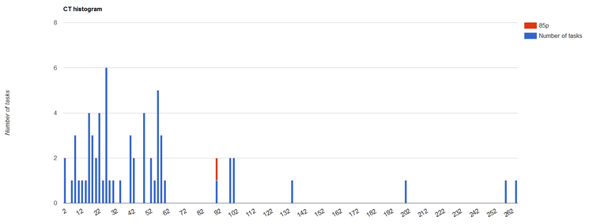

"Спидометры" |
|
|  |
Demand - количество задач в очереди на текущий момент WIP - количество задач в работе на текущий момент Throughput - пропускная способность за последние 30 дней |
Кумулятивная диаграмма потока задач (Cumulative flow diagram) |
|
|  |
Это графическое представление того, на какой стадии находятся задачи по проекту. Каждая цветная область на графике соответствует одному из возможных статусов задачи. При клике на любой из цветных квадратиков на графике появляется или исчезает соответствующая область. Ее удобно использовать для определения "узких мест" в вашем проекте, например, если вы видите, что растет область "На проверке", это значит, что необходимо выяснить, почему проверяющий не нашел времени принять/отклонить задачи. Или, скажем, если в проекте растет количество отклоненных задач, то руководитель сможет вовремя заметить это и узнать, в чем причина (невнятное ТЗ, конфликт в коллективе, болезнь и снижение работоспособности сотрудника, и т.д.) Цветные линии (кроме голубой и фиолетовой) - показывают количество задач, пересекших соответствующие им стадии (указаны в легенде). Фиолетовая линия - размер WIP Голубая линия - пропускная способность за последние 30 дней |
Контрольная диаграмма времени выполнения задач (Control chart) |
|
|  |
Это графическое представление результатов процесса во времени и в сравнении с установленными контрольными границами, имеющее осевую линию, помогающую определить тренд величин по графику в направлении каждой из контрольных границ. Ось X - последовательно закртыые задачи Высота синего столба - время выполнения задачи Красная линия - линейный тренд Желтая линия - скользящая средняя Тренд - это закономерность описывающая подъем или падение показателя в динамике. Как и любая другая регрессия, тренд может быть как линейным (степень влияющего фактора t равна 1) так и нелинейным (степень больше или меньше единицы). Так как линейная регрессия является самой простейшей, хотя далеко не всегда самой точной. |
Гистограмма распределения времени выполнения задач |
|
|  |
Это графическое представление функции, приближающая плотность вероятности распределения, построенная на основе выборки из него. Позволяет понять, за сколько времени какое количество задач закрыто. Ось X - длительность в днях Высота синего столба - количество задач Красная отметка - 85-ая процентиль. Процентиль - значения, выделяющие 100-е части распределения, выстроенные в ряд по их величине. 85 -й процентиль распределения дохода, например, представляет собой такое время закрытия задач, когда только 15 процентов задач были сделано за большее количество дней. |